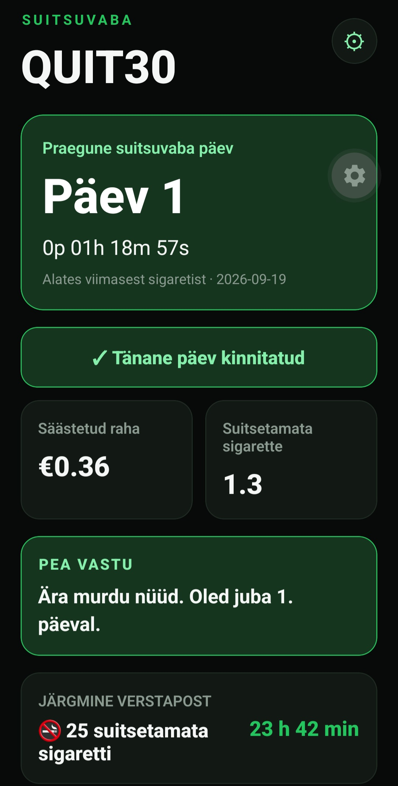

QUIT30
30-päevane suitsetamisest loobumise äpp, mis näitab reaalajas, kui kaua oled olnud suitsuvaba, kui palju raha oled säästnud ja mitu sigaretti on jäänud suitsetamata.

Lihtne idee. Selge progress.
Reaalajas loendur
Suitsuvaba aeg kasvab sekund-sekundilt ning progress on kohe nähtav.
Säästetud raha
Näed pidevalt, kui palju raha oled suitsetamata jätmisega säästnud.
Suitsetamata sigaretid
QUIT30 arvutab reaalajas, mitu sigaretti oled juba vahele jätnud.
Verstapostid
12 tundi, 24 tundi, 3 päeva, 7 päeva ja järgmised saavutused.
5 minuti suitsuisu režiim
Juhendatud viieminutiline tegevus, mis aitab suitsuisu hetke üle elada.
Motivatsiooniteavitused
QUIT30 annab märku olulistest verstapostidest ja igapäevasest progressist.
Praegu testimisel
QUIT30 töötab praegu Androidis ja seda testitakse päris telefonides. Järgmine eesmärk on kasutusmugavuse parandamine, iPhone'i tugi ja avalik testversioon.